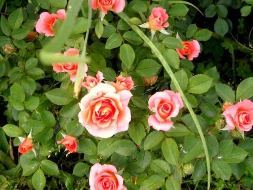

Mini Rosal
El rosal mini, también conocido como rosal de pitiminí, es una variedad mini del rosal, con capacidad de floración constante, que puede cultivarse en exterior o en interior y que se ve fácilmente afectado, como el resto de rosales, por algunas plagas y enfermedades, por lo que es muy importante seguir algunas recomendaciones clave en su cuidado.


VOLVER AL PRINCIPIO
|